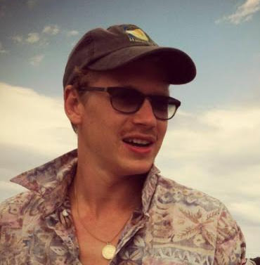
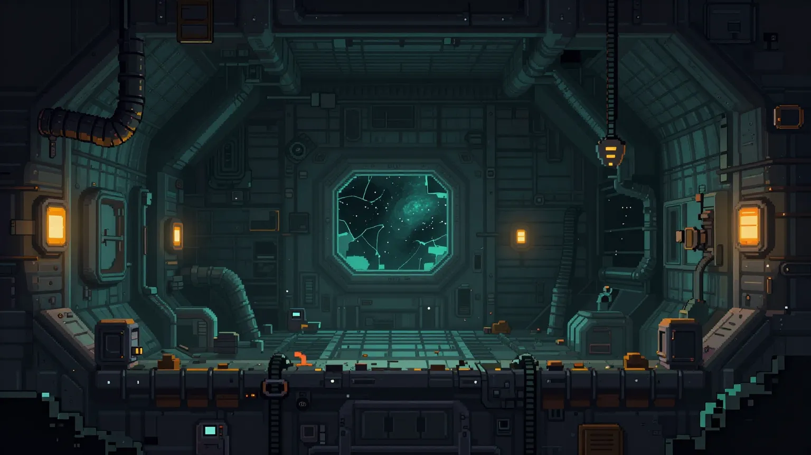

Creative UI/UX Engineer · Ceramic Artist
I move between two disciplines that don't usually share a desk: software and clay. I trained as a ceramic artist — an MFA at Cranbrook, an apprenticeship with Toshiko Takaezu — before crossing into engineering, and I never really left the first half behind. These days I'm a Principal Software Development Engineer at CarGurus, but the instincts carry over: an interest in form, in how a system feels to move through, in leaving room for a little imperfection instead of sanding every edge smooth. Sprite Forge, below, is where that shows up most directly right now.
A pixel-art hero generator and editor that runs entirely in the browser. Roll a random character from fifteen body types, then paint over it by hand — pencil, fill, mirror painting, undo/redo. Generate a full pose sheet (front, back, side, run, jump) from whatever's on the canvas, export sprite sheets, and keep a gallery of saved designs. No build step, no install — it's a handful of static files.
A three-game bundle built in Godot, sharing one hub and one visual world: a Slay-the-Spire-style deckbuilder, a branching escape platformer with a full boss fight, and a dice-driven, choice-based text RPG. Art direction is "HD-2D outlaw" — detailed pixel-art figures, space-western wardrobe, noir lighting.

Concept art from the in-progress asset pipeline, not gameplay screenshots — still mid-playtest and not yet public. A link goes here once it ships.
Building React/Redux B2B SaaS applications across mobile and desktop.
Built responsive web applications for higher-education courses. Ran a weekly engineering tech talk.
Full-time immersive program covering JavaScript, Ruby, and test-driven development.
Produced exhibitions for the Philadelphia Clay Art Center and design studio objects alongside the artist.
Taught undergraduate and graduate students material and sculptural concepts in a collaborative studio environment.
Managed studio and collection for the artist, and handled museum correspondence, including with the Okinawa Prefectural Museum.
Studio Council President. Developed an advanced contemporary ceramics practice through studio work and peer-led critique.
I grew up in Essex, Massachusetts, by the ocean — shaped, I think, by a family of gardeners and sailors.
By conflicting real or mythic points of origin, traditions of American identity, and personal lineage, my work gathers narrative into an increasingly singular entropic condition. Through abstraction, I examine my place in these histories and distill them into sensations about history.
Mostly bootcamp- and early-career-era projects, kept here for the record rather than as current work.